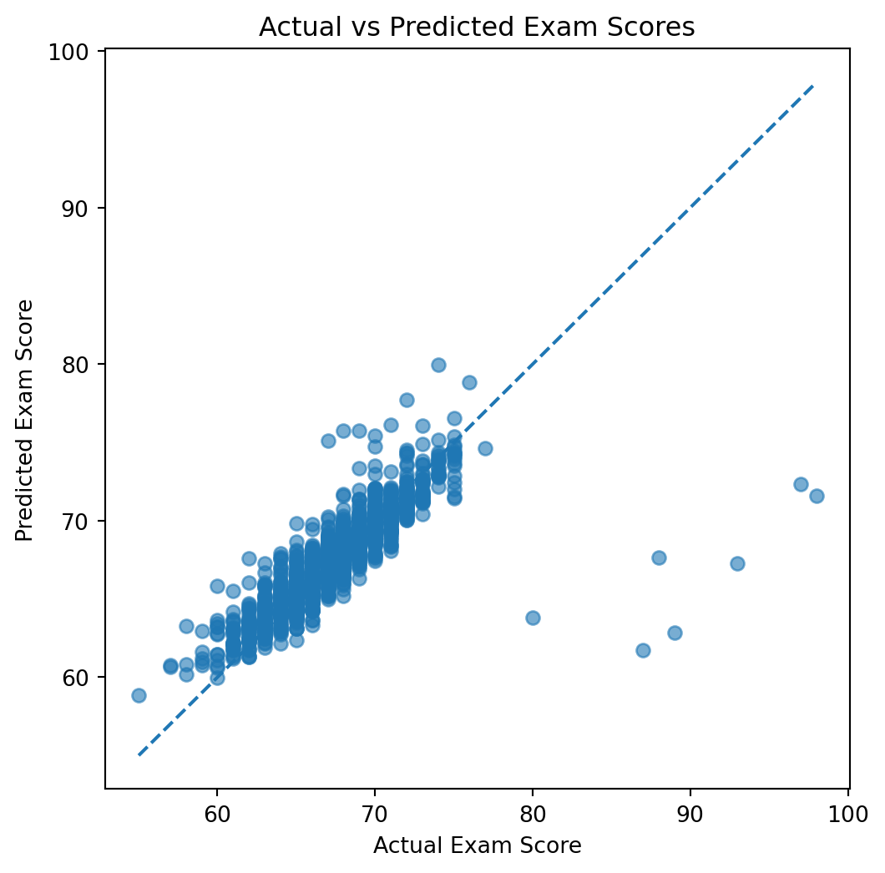

import pandas as pd
import matplotlib.pyplot as plt
import seaborn as snsPredicting Exam Scores
Overview
As I head into finals this week, I wanted to look into the factors that impact college students’ success on exams. I first want to visualize metrics that I think would have a significant impact on a students exam score to start understanding variable signficance. From there, I would like to quantify their relationships through the means of an OLS model. Finally, I want to see if I can predict a students exam score using Random Forrest Regression.
Through this analysis I hope to understand:
What factors most strongly influence a students exam performance, and therefore what should I prioritize this week?
Can we predict exam score based off the available data?
Purpose
Understanding which variables influence exam performance can help students prioritize specific behaviors when aiming for educational success. For example, if tutoring is not strongly associated with higher exam scores, students may choose prioritize attendance or sleep to improve their performance. Additionally, accurately being able to predict exam score performance could be immensely useful to professors. If they calculate that a student should earn a 90 but they recieve a 65, there may have been an error when grading or they can speak to the student to understand if something went wrong.
The Data
The data I used for the project includes a variety of information about students, their education, and behaviors. Variables included are both numeric and categorical. Some metrics of importance include hours studied, attendance hours, resource availability, and family income.
data = pd.read_csv("/Users/maddypitman/Downloads/StudentPerformanceFactors.csv")
data.head()| Hours_Studied | Attendance | Parental_Involvement | Access_to_Resources | Extracurricular_Activities | Sleep_Hours | Previous_Scores | Motivation_Level | Internet_Access | Tutoring_Sessions | Family_Income | Teacher_Quality | School_Type | Peer_Influence | Physical_Activity | Learning_Disabilities | Parental_Education_Level | Distance_from_Home | Gender | Exam_Score | |
|---|---|---|---|---|---|---|---|---|---|---|---|---|---|---|---|---|---|---|---|---|
| 0 | 23 | 84 | Low | High | No | 7 | 73 | Low | Yes | 0 | Low | Medium | Public | Positive | 3 | No | High School | Near | Male | 67 |
| 1 | 19 | 64 | Low | Medium | No | 8 | 59 | Low | Yes | 2 | Medium | Medium | Public | Negative | 4 | No | College | Moderate | Female | 61 |
| 2 | 24 | 98 | Medium | Medium | Yes | 7 | 91 | Medium | Yes | 2 | Medium | Medium | Public | Neutral | 4 | No | Postgraduate | Near | Male | 74 |
| 3 | 29 | 89 | Low | Medium | Yes | 8 | 98 | Medium | Yes | 1 | Medium | Medium | Public | Negative | 4 | No | High School | Moderate | Male | 71 |
| 4 | 19 | 92 | Medium | Medium | Yes | 6 | 65 | Medium | Yes | 3 | Medium | High | Public | Neutral | 4 | No | College | Near | Female | 70 |
Modeling
I will be using OLS from statsmodels.formula.api to quantify the relationship between the predictive variables and exam score.
import statsmodels.api as sm
import statsmodels.formula.api as smf
from sklearn.ensemble import RandomForestRegressor
from sklearn.model_selection import train_test_split
from sklearn.metrics import mean_squared_error, mean_absolute_error, r2_scoremodel = smf.ols("Exam_Score ~ Hours_Studied + Attendance", data=data).fit()
print(model.summary()) OLS Regression Results
==============================================================================
Dep. Variable: Exam_Score R-squared: 0.541
Model: OLS Adj. R-squared: 0.541
Method: Least Squares F-statistic: 3896.
Date: Wed, 03 Dec 2025 Prob (F-statistic): 0.00
Time: 11:46:22 Log-Likelihood: -15776.
No. Observations: 6607 AIC: 3.156e+04
Df Residuals: 6604 BIC: 3.158e+04
Df Model: 2
Covariance Type: nonrobust
=================================================================================
coef std err t P>|t| [0.025 0.975]
---------------------------------------------------------------------------------
Intercept 45.6042 0.252 180.743 0.000 45.110 46.099
Hours_Studied 0.2931 0.005 54.140 0.000 0.282 0.304
Attendance 0.1973 0.003 70.252 0.000 0.192 0.203
==============================================================================
Omnibus: 7183.361 Durbin-Watson: 2.000
Prob(Omnibus): 0.000 Jarque-Bera (JB): 768940.589
Skew: 5.425 Prob(JB): 0.00
Kurtosis: 54.725 Cond. No. 648.
==============================================================================
Notes:
[1] Standard Errors assume that the covariance matrix of the errors is correctly specified.Based off the available variables, hours studied and attendance seem like they would have the strongest corelation to exam scores. After making a model with only these variables, we see that the explained variation in exam score is 54.1%. Both variables are significant and have a positive impact on exam score.
It is estimated that for each hour studied, a students exam score will increase by 0.29. For each additional hour in class, a students score rises by 0.19 on average.
model = smf.ols("Exam_Score ~ Hours_Studied + Attendance + Tutoring_Sessions + Previous_Scores + C(Gender)", data=data).fit()
print(model.summary()) OLS Regression Results
==============================================================================
Dep. Variable: Exam_Score R-squared: 0.597
Model: OLS Adj. R-squared: 0.596
Method: Least Squares F-statistic: 1954.
Date: Wed, 03 Dec 2025 Prob (F-statistic): 0.00
Time: 11:46:22 Log-Likelihood: -15350.
No. Observations: 6607 AIC: 3.071e+04
Df Residuals: 6601 BIC: 3.075e+04
Df Model: 5
Covariance Type: nonrobust
=====================================================================================
coef std err t P>|t| [0.025 0.975]
-------------------------------------------------------------------------------------
Intercept 41.2666 0.290 142.166 0.000 40.698 41.836
C(Gender)[T.Male] -0.0313 0.062 -0.508 0.611 -0.152 0.089
Hours_Studied 0.2916 0.005 57.431 0.000 0.282 0.302
Attendance 0.1977 0.003 75.062 0.000 0.193 0.203
Tutoring_Sessions 0.4958 0.025 20.061 0.000 0.447 0.544
Previous_Scores 0.0480 0.002 22.739 0.000 0.044 0.052
==============================================================================
Omnibus: 8049.633 Durbin-Watson: 1.999
Prob(Omnibus): 0.000 Jarque-Bera (JB): 1236152.329
Skew: 6.526 Prob(JB): 0.00
Kurtosis: 68.726 Cond. No. 1.07e+03
==============================================================================
Notes:
[1] Standard Errors assume that the covariance matrix of the errors is correctly specified.
[2] The condition number is large, 1.07e+03. This might indicate that there are
strong multicollinearity or other numerical problems.Adding more seemingly strong predictors, the R squared only increased by 5%. This suggests the addition of gender, tutoring, and previous scores does not improve the model tremendously.
We do get one negative coefficient for being male, suggesting that men score lower than women on average. However, this is not statistically significant.
model = smf.ols(
"Exam_Score ~ Hours_Studied + Attendance + Parental_Involvement + "
"Access_to_Resources + Extracurricular_Activities + Sleep_Hours + "
"Previous_Scores + Motivation_Level + Internet_Access + Tutoring_Sessions + "
"Family_Income + Teacher_Quality + C(School_Type) + Peer_Influence + "
"Physical_Activity + C(Learning_Disabilities) + C(Parental_Education_Level) + "
"Distance_from_Home + C(Gender)",
data=data
).fit()
print(model.summary()) OLS Regression Results
==============================================================================
Dep. Variable: Exam_Score R-squared: 0.722
Model: OLS Adj. R-squared: 0.720
Method: Least Squares F-statistic: 609.8
Date: Wed, 03 Dec 2025 Prob (F-statistic): 0.00
Time: 11:46:22 Log-Likelihood: -13675.
No. Observations: 6378 AIC: 2.741e+04
Df Residuals: 6350 BIC: 2.759e+04
Df Model: 27
Covariance Type: nonrobust
===============================================================================================================
coef std err t P>|t| [0.025 0.975]
---------------------------------------------------------------------------------------------------------------
Intercept 41.8286 0.338 123.710 0.000 41.166 42.491
Parental_Involvement[T.Low] -1.9829 0.075 -26.309 0.000 -2.131 -1.835
Parental_Involvement[T.Medium] -1.0624 0.061 -17.557 0.000 -1.181 -0.944
Access_to_Resources[T.Low] -2.0633 0.075 -27.469 0.000 -2.211 -1.916
Access_to_Resources[T.Medium] -1.0096 0.060 -16.807 0.000 -1.127 -0.892
Extracurricular_Activities[T.Yes] 0.5620 0.053 10.615 0.000 0.458 0.666
Motivation_Level[T.Low] -1.0620 0.075 -14.101 0.000 -1.210 -0.914
Motivation_Level[T.Medium] -0.5423 0.069 -7.916 0.000 -0.677 -0.408
Internet_Access[T.Yes] 0.9247 0.098 9.442 0.000 0.733 1.117
Family_Income[T.Low] -1.0856 0.072 -15.115 0.000 -1.226 -0.945
Family_Income[T.Medium] -0.5906 0.072 -8.210 0.000 -0.732 -0.450
Teacher_Quality[T.Low] -1.0575 0.094 -11.207 0.000 -1.242 -0.873
Teacher_Quality[T.Medium] -0.5490 0.058 -9.453 0.000 -0.663 -0.435
C(School_Type)[T.Public] 0.0327 0.056 0.579 0.563 -0.078 0.143
Peer_Influence[T.Neutral] 0.5222 0.070 7.415 0.000 0.384 0.660
Peer_Influence[T.Positive] 1.0270 0.070 14.653 0.000 0.890 1.164
C(Learning_Disabilities)[T.Yes] -0.8538 0.085 -10.074 0.000 -1.020 -0.688
C(Parental_Education_Level)[T.High School] -0.4858 0.060 -8.119 0.000 -0.603 -0.369
C(Parental_Education_Level)[T.Postgraduate] 0.5027 0.075 6.734 0.000 0.356 0.649
Distance_from_Home[T.Moderate] 0.3879 0.095 4.098 0.000 0.202 0.574
Distance_from_Home[T.Near] 0.9077 0.089 10.225 0.000 0.734 1.082
C(Gender)[T.Male] -0.0422 0.053 -0.802 0.422 -0.145 0.061
Hours_Studied 0.2949 0.004 68.009 0.000 0.286 0.303
Attendance 0.1988 0.002 88.363 0.000 0.194 0.203
Sleep_Hours -0.0020 0.018 -0.112 0.911 -0.037 0.033
Previous_Scores 0.0489 0.002 27.071 0.000 0.045 0.052
Tutoring_Sessions 0.4982 0.021 23.699 0.000 0.457 0.539
Physical_Activity 0.1867 0.025 7.385 0.000 0.137 0.236
==============================================================================
Omnibus: 10556.728 Durbin-Watson: 2.008
Prob(Omnibus): 0.000 Jarque-Bera (JB): 5019643.307
Skew: 11.388 Prob(JB): 0.00
Kurtosis: 138.535 Cond. No. 1.49e+03
==============================================================================
Notes:
[1] Standard Errors assume that the covariance matrix of the errors is correctly specified.
[2] The condition number is large, 1.49e+03. This might indicate that there are
strong multicollinearity or other numerical problems.Using all the variables in the dataset has the highest R squared of the models created thus far. 72.2% of variation in exam scores can be explained when including all of the available variables. Only a few variables are not regarded as statistically significant and these include medium teacher quality, being male, and sleep hours.
The metric with the greatest quantitative impact on exam score is low access to resources. Students with low access to resources are expected to score 2 points lower than a student with all other similar conditions. The second greatest impact is positive peer influence. This suggests that students in a supportive student environment tend to score 1 point higher on the exam than students who are not in a positive environment. This is an interesting way to see how the energy and mindset of those around you impact your success.
Predicting Exam Score
I am using Random Forrest Regression to predict a students exam score based on the data. Since there are a number of categorical variables I used get_dummies to convert them into usable categical numbers. Further, I broke the data into a train and test set to fit a model to the training data then evaluate its performance on the test data. Finally, I computed performance metrics to understand how well the model does.
df = pd.get_dummies(data, drop_first=True)
X = df.drop("Exam_Score", axis=1)
y = df["Exam_Score"]
X_train, X_test, y_train, y_test = train_test_split(
X, y, test_size=0.2, random_state=42
)
rf = RandomForestRegressor(n_estimators=500, random_state=42)
rf.fit(X_train, y_train)
preds = rf.predict(X_test)
rmse = mean_squared_error(y_test, preds, squared=False)
mae = mean_absolute_error(y_test, preds)
r2 = r2_score(y_test, preds)
print("RMSE:", rmse)
print("MAE:", mae)
print("R²:", r2)RMSE: 2.225020452743883
MAE: 1.175018154311649
R²: 0.6497565877666611plt.figure(figsize=(6,6))
plt.scatter(y_test, preds, alpha=0.6)
plt.plot([y_test.min(), y_test.max()], [y_test.min(), y_test.max()], '--')
plt.xlabel("Actual Exam Score")
plt.ylabel("Predicted Exam Score")
plt.title("Actual vs Predicted Exam Scores")
plt.show()
The models performance is moderately strong in its ability to predict exam scores. The RMSE expresses that the models predictions on average differ from the true score by 2.2 points. This is a very small margin.
The R square reflects that 64.9% of variation in exam scores can be explained by the model. This is a good score but could be stronger.
Overall, this model does a decent job predicting exam score. It would be interesting to see how adding variables like previous experience in the subject or motivation impact scores. Motivation could be measured by: whether or not the student is trying to find a job, whether they plan on pursuing a career in that subject, etc.